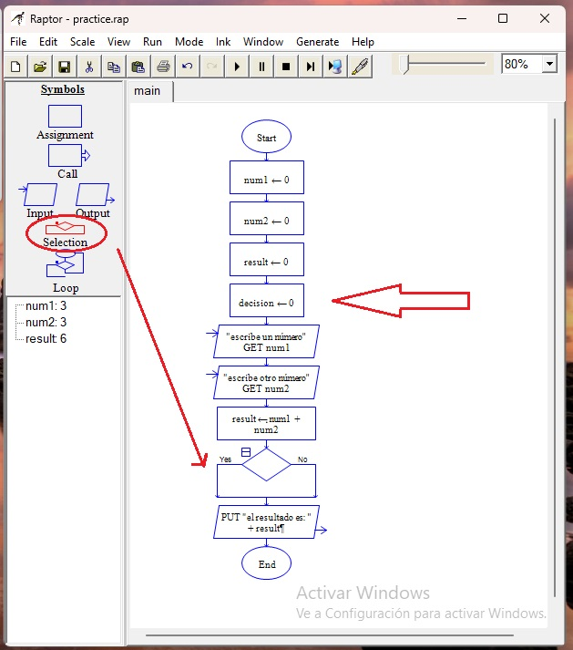

Condicionales
Nos habla de una decición a tomar de acuerdo a determinada circunstancia, como decir "si no llueve, lavo la ropa" o "si depositan hoy, voy al cine, si no, veré netflix"
es tan sencillo que vamos a crear un programa para demostrarlo. Usaremos las mismas variables num1, num2 y result, solo que ahora agregaremos una nueva: decision.
A todas les vamos a dar el valor inicial cero, definiendo de una vez el tipo de dato. Usamos el símbolo "input" y dejamos un mensaje al usuario para que ingrese un número cualquiera, lo que definirá el valor de la variable decision. Ahora sí ubicamos el símbolo "selection" y vemos que tiene dos rutas: "sí" y "no", y en medio hay un rombo. Dentro de ese rombo establecemos la condición, en este caso será que la variable decision será igual a 1.
esto significa que el programa trabajará en base a la elección del usuario, comparando lo que tiene guardado la variable decision con lo que dice el condicional.
lo colocamos en el penúltimo puesto y hacemos doble clic sobre el rombo, establecemos la condición y listo.

Se escribe la condición con una doble igualdad debido a que es el símbolo que se usa para comparar, una sóla se usa para asignar un dato a una variable: saludo = "hola" (hola se guarda en la variable saludo), doble igualdad se usa para comparación: saludo == "hola" (saludo debe contener un valor "hola" para ser igual a "hola")